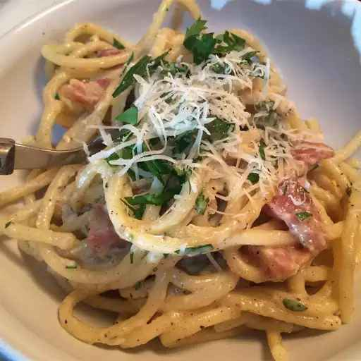

Spaghetti alla Carbonara

Description
Spaghetti alla carbonara's creamy sauce is simply a thin egg and cheese custard, spiked with pork and black pepper.
Try to find pancetta or guanciale (pork cheek cured like pancetta) for a really authentic taste!
Ingredients
- 4 ounces guanciale, cut into 1/4-inch cubes
- 1 tablespoon olive oil
- 1 teaspoon ground black pepper, or to taste
- 2 eggs
- 3 tablespoons grated Parmigiano-Reggiano cheese
- 3 tablespoons grated Pecorino Romano cheese
- 1 teaspoon ground black pepper, or to taste
- 6 ounces spaghetti
- 1 cup reserved pasta water
- 3 tablespoons grated Parmigiano-Reggiano cheese
- 3 tablespoons grated Pecorino Romano cheese
Steps
- Cook guanciale with olive oil and 1 teaspoon ground black pepper in a
Dutch oven over medium-low heat until almost crisp, about 5 minutes.
Reduce heat to low.
- Whisk eggs, 3 tablespoons Parmigiano-Reggiano cheese, 3 tablespoons
Pecorino Romano cheese, and 1 teaspoon ground black pepper in a
bowl. Set aside.
- Bring a large pot of lightly salted water to a boil. Cook spaghetti in the
boiling water, stirring occasionally until cooked through but firm to the
bite, 10 to 12 minutes. Drain, reserving 1 cup of the pasta water.
- Pour reserved pasta water and drained spaghetti into the bacon-
pepper mixture; stir to combine.
- Slowly pour egg mixture into the pasta mixture; cook, stirring
constantly until the egg mixture forms a thick sauce, 1 to 2 minutes.
Remove from heat.
- Stir remaining 3 tablespoons Parmigiano-Reggiano cheese and 3
tablespoons Pecorino Romano cheese into the pasta mixture
and serve.